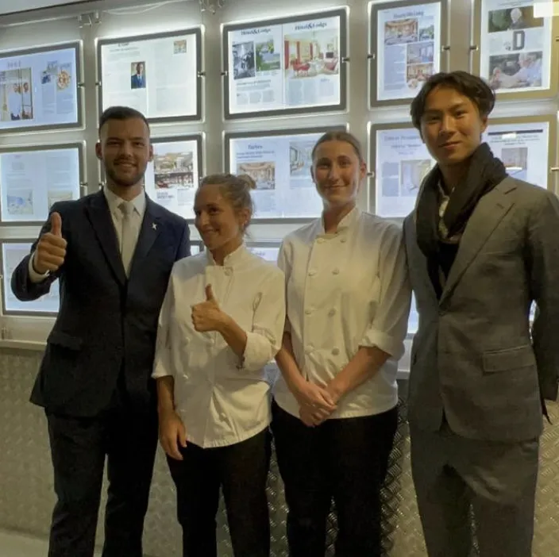
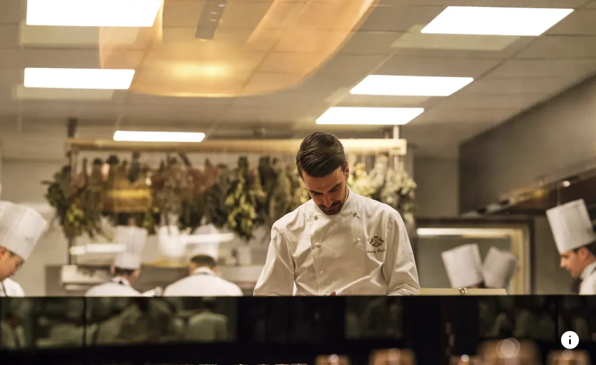

Written by Preston Chan
Written by Preston Chan

I recently had the privilege of dining at Le Meurice, one of Paris’s most iconic restaurants helmed by the legendary Alain Ducasse. Known for its three Michelin stars and its celebration of French haute cuisine, the experience was unforgettable—not just for the food, but for what it revealed about the art of excellence.
What made this visit even more special was the opportunity to go behind the scenes. I stepped into the kitchen, visited the private dining room, and observed the silent choreography of chefs, sommeliers, and servers moving with precision and purpose. With the guidance of Mathias, a seasoned server at Le Meurice, I came away with lessons that went far beyond fine dining. These principles apply to anyone striving for success—in hospitality, business, or life in general.
1. Attention to Detail is Everything

At Le Meurice, nothing is left to chance. From the angle at which a plate is set to the exact temperature of the wine being served, every action is intentional. Success, I realized, often hinges not on grand gestures, but on the consistency of small, thoughtful choices. Whether you're serving customers, building a brand, or refining your craft, precision and care are what set excellence apart from the average.
2. The Customer is Always Right—But It’s Deeper Than That
This classic saying takes on a deeper meaning in a place like Le Meurice. It's not just about avoiding conflict or keeping guests happy—it's about anticipating needs, creating memorable moments, and making people feel seen and valued. True service is proactive, empathetic, and rooted in respect. That mindset is powerful not just in hospitality, but in any profession that involves people (which is nearly all of them).
3. The Real Work Happens Behind the Scenes

It’s easy to admire the elegance of the final dish or the warmth of a seamless interaction, but what struck me most was the rigor behind it all. The hours of prep, the quiet communication between staff, the relentless repetition—none of it is visible to the guest, yet it’s what makes everything possible. This reinforced a timeless truth: behind every moment of brilliance lies unseen effort and discipline.
Final Thoughts
Whether you’re leading a team, building a career, or pursuing a passion, the lessons I learned at Le Meurice serve as a timeless blueprint. Pay attention to the little things. Serve with purpose. And never underestimate the power of what happens when no one’s watching.
Excellence isn’t accidental—it’s built, moment by moment, detail by detail.